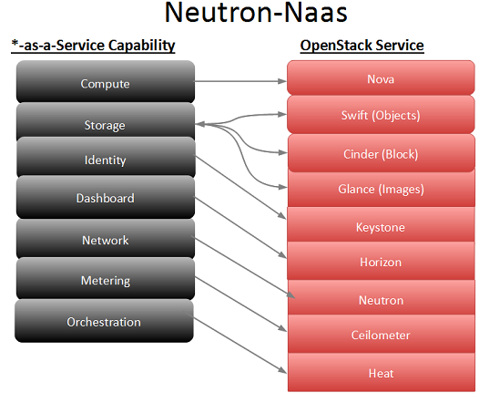

openstack各组件介绍
经常有朋友让我介绍Openstack，我就干脆写一篇Openstack的组件介绍，也算是总结一下。马上2012年就要结束了，也是到该总结的时候。去年现在的Openstack，其实官方的Keystone和Horizon还没法很好的一起工作。
我个人的理解：下面的组件全部工作良好，那么基本的一个IAAS就算比较完整，这些功能都是目前Rackspace和linode都有的。
目前官方认同的孵化项目，都会放到 https://github.com/stackforge
大家可以通过wiki的变化，了解项目目前的情况：http://wiki.openstack.org/RecentChanges
如果大家希望详细了解项目进度，可以阅读他们每次开会的纪要，包括各种问题的讨论，非常有意思：http://eavesdrop.openstack.org/meetings/
如果希望快速了解，可以直接看这个http://eavesdrop.openstack.org/meetings/project/ 所有的项目大概进度都会在这里讨论。
| 组件 | 说明 |
|---|---|
| Nova | Compute HyperV管理(libvirt,qumu...) |
| Neutron | 网络和地址管理(原名Quantum) |
| Swift | 对象存储(Object) |
| Cinder | 块存储管理(Cinder):主机指虚拟机的存储管理 |
| Keystone | 身份认证授权(Identity) |
| Glance | 镜象管理(Image)，支持本地存储、NFS、Swift、sheepdog和Ceph |
| Horizon | UI界面 (Dashboard) |
| Ceilometer | 监控计量(Metering) |
| Heat | 软件部署(编配Orchestration) |
| Lbass | 负载均衡，后端可以是各种商业和开源产品，如：F5、Nginx、Haproxy、LVS |
| oslo | 把所有组件需要用的相同的东西集中起来 |
| Moniker | DNS:每个虚拟机，都会自动有一个dns记录 |
| marconi | 消息队列扩展(Queue Service) |
| Trove | Database Service |
| Ironic | 裸机部署(Bare Metal) |
| Savannah | Data Processing |
- Openstack几个核心项目

Nova:Hyperv管理
这个是最核心的，Nova最开始的时候，可以说是一套虚拟化管理程序，还可以管理网络和存储。不过从Essex版本后，Nova开始做减法，和网络相关的内容，包括安全组，交给Quantum负责，存储相关的交给Cinder负责。调度有关的内容，会交给新的项目Marconi。
以前还有一个nova common，这其实是各个组件都使用相同的东西，现在也专门成立一个项目：oslo，已经是核心项目。
未来Nova对各种Hyperv的支持是有差异的，KVM和XEN，基本是最好的。微软的Hyper-V算是很不错，微软投入再研发。刚才朋友还专门提到一点：就是未来计算节点，不直接查询数据库，而是通过rpc的方式，据说这是一大进步。
Nova的稳定性，其实取决于libvirt，qemu，希望未来可以能更加稳定。功能现在其实已经不是大问题。
keystone:认证授权
这是提供身份认证和授权的组件。任何系统，身份认证和授权，其实都比较复杂。尤其Openstack 那么庞大的项目，每个组件都需要使用统一认证和授权。
目前keystone 要做的东西其实还是很多。没法基于角色的授权，web管理用户等。当然你如果希望实现使用动态令牌认证，多因素认证，LDAP集成，这都是未来版本需要实现的功能，这些功能都已经在计划中。
目前好像要实现keystone的高可用，还是比较困难，这个就让社区慢慢解决吧。大规模部署，这也会是瓶颈。
Glance:镜象管理
这是镜像管理。功能其实相对比较简单。不过Glance后端的存储的支持，其实一直到Folsom的版本，Glance对swift的支持，才算是比较完善。
目前Glance的镜像存储，支持本地存储，NFS，swift，sheepdog和Ceph，基本是够用了。
目前Glance的最大需求就是多个数据中心的镜像管理，如何复制，不过这个功能已经基本实现。还有就是租户私有的image管理，这些目前功能都已经实现。
个人感觉：Glance后续基本就是一个bug修复，稳定的阶段。
Quantum:网络管理
这是网络管理的组件，也是重头戏，Openstack的未来，基本都要靠quantum。上面介绍nova的时候，说过网络相关的内容，都会交给Quantum。不过Quantum的开发进度不是太如人意。Flosom规划实现功能，到Grizzly才实现。未来nova network的代码清理，估计到H版本都不见得可以实现。
Quantum 后端可以是商业产品或者开源。开源产品支持Openvswitch，和linux bridge。网络设备厂商都在积极参与，让他们的产品支持Quantum，目前思科，锐捷已经实现支持。
比较悲观的估计：quantum要完全满足生产的需求，例如带宽限制，mutilhost等功能，很可能需要等到2014年的I版本，真的考验耐心。
如果你关注Quantum的话，就会发现目前还是在起步阶段，无论是bug还是功能，都是非常多。
Cinder:存储管理
这是存储管理的组件。一直以来，很多人都很纠结AWS的EBS的实现。Openstack也终于推出了自己的存储管理组件。
Cinder存储管理主要是指虚拟机的存储管理。目前支持开源和商业化产品。开源的sheepdog，Ceph等。商业存储的支持，目前IBM是最积极的。未来如果商业存储厂商都支持Cinder，对Openstack的商业化还是非常有利的。
对于企业来说，使用分布式作为虚拟机的存储，并不能真正节省成本，维护一套分布式存储，成本还是很高的。目前虚拟机的各种高可用，备份的问题，其实都可以把问题交给商业存储厂商来解决。
Lbaas:负载均衡
这是实现负载均衡的项目。现在linode，Rackspace，都提供了负载均衡的服务，有了这个服务，你才有可能实现所谓的弹性扩展。这个组件是Mirantis公司和思科合作开发的。目前这个项目集成在Quantum里，不过基本算是一个独立的组件。
Lbaas后端可以是各种商业产品和开源产品。F5，Ngnix，Haproxy，LVS
未来发布的Grizzly，你应该有机会在Dashboard里设置虚拟机的负载均衡。
Horizon:演示
严格意义来说，Horizon不会为Openstack 增加一个功能，他更多的是一个演示，demo。不过对于很多用户来说，了解Openstack基本都是从Horizon，dashboard开始。从这个角度来看，他在Openstack各个项目里，显得非常重要。
Horizon的开发者，应该是最累的。需要和各个项目打交道。每个项目的功能很多都是需要通过Dashboard来展现。
大家需要注意的是：Horizon只是使用了Openstack部分API功能，很多功能，你可以根据你的需求去实现。
Swift:对象存储
这是对象存储的组件。对于大部分用户来说，swift不是必须的。你只有存储数量到一定级别，而且是非结构化数据才有这样的需求。很多人都问一个相同的问题：是否可以把虚拟机的存储放在swift上。简单回答：不行。你需要搞明白对象存储是干啥，擅长那些地方，那些是不行的。
swift是Openstack所有组件了最成熟的,可以在线升级版本,各种版本可以混合在一起,也就是说,1.75版本的swift可以和1.48的在一个群集里.这个是很难得的.
oslo
这个项目其实就是把所有组件需要用到相同的东西，集中起来，以前叫nova common，估计感觉不贴切，现在单独成立一个项目。日后大家开发新的组件，估计都需要用到oslo。
Ceilometer:监控计量
这是实现监控和计量的组件。这应该算是Grizzly的孵化项目。对他的了解其实很少。在Grizzly版本里，你应该可以在Dashboard里看到这个组件。
监控和计费一直是一个难题，尤其用户希望知道cpu和内存的使用情况。看看他如何解决这个问题。到时候看看同事如何调用api来解决监控和计量的问题。解决计量，计费就简单的。
http://wiki.openstack.org/Ceilometer
Heat:软件部署
这个项目是要解决虚拟机的软件部署的问题。你的虚拟机创建好，os准备好，你还需要做很多配置才能使用，如何能实现把所有繁琐的操作简化呢？亚马逊上有一个专门的工具：AWS cloudformation。目前Openstack上，希望通过Heat来实现类似的功能。
关于这个项目，还是有很多争议。不过这个项目是Redhat发起。他们的功力是不容置疑，等Openstack成熟后，这个项目的重要性就会体现出来。
http://wiki.openstack.org/Heat
真的要实现弹性扩展，自动部署，都是需要指望这个。目前Heat已经成为孵化项目
下面的项目，基本都还是在讨论阶段，不过成为孵化项目的可能性很大。
Moniker:DNS
这是实现dns功能的组件。其实如果你用过AWS，你就知道这个功能是必不可少。新浪目前的已经加上了这个功能，每个虚拟机，都会自动有一个dns记录。
https://github.com/stackforge/moniker
估计集成到Dashboard里，还是需要等待一段时间啊。目前该项目开发还是非常积极。
marconi:消息队列扩展
此项目用于解决openstack 消息队列的扩展问题。据说这是Rackspce推出的项目，就是为了解决他们生产中遇到消息队列的问题。
Marconi – Message Bus for OpenStack
http://www.chenshake.com/openstack-component-introduction-2/